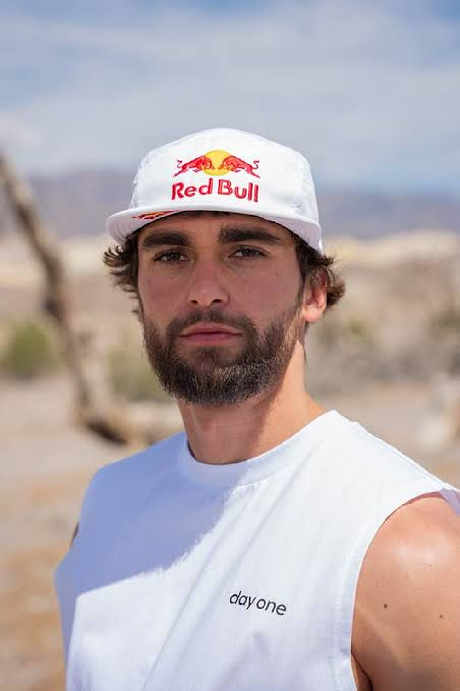
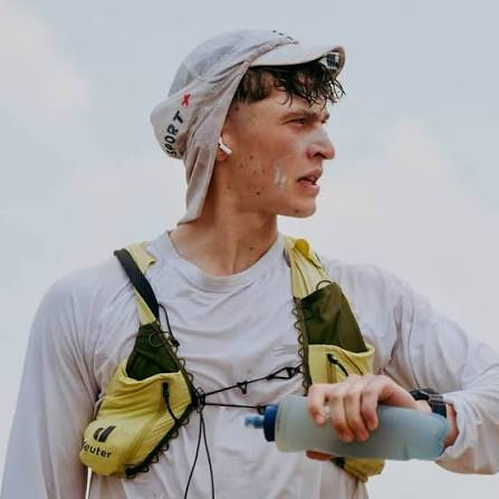
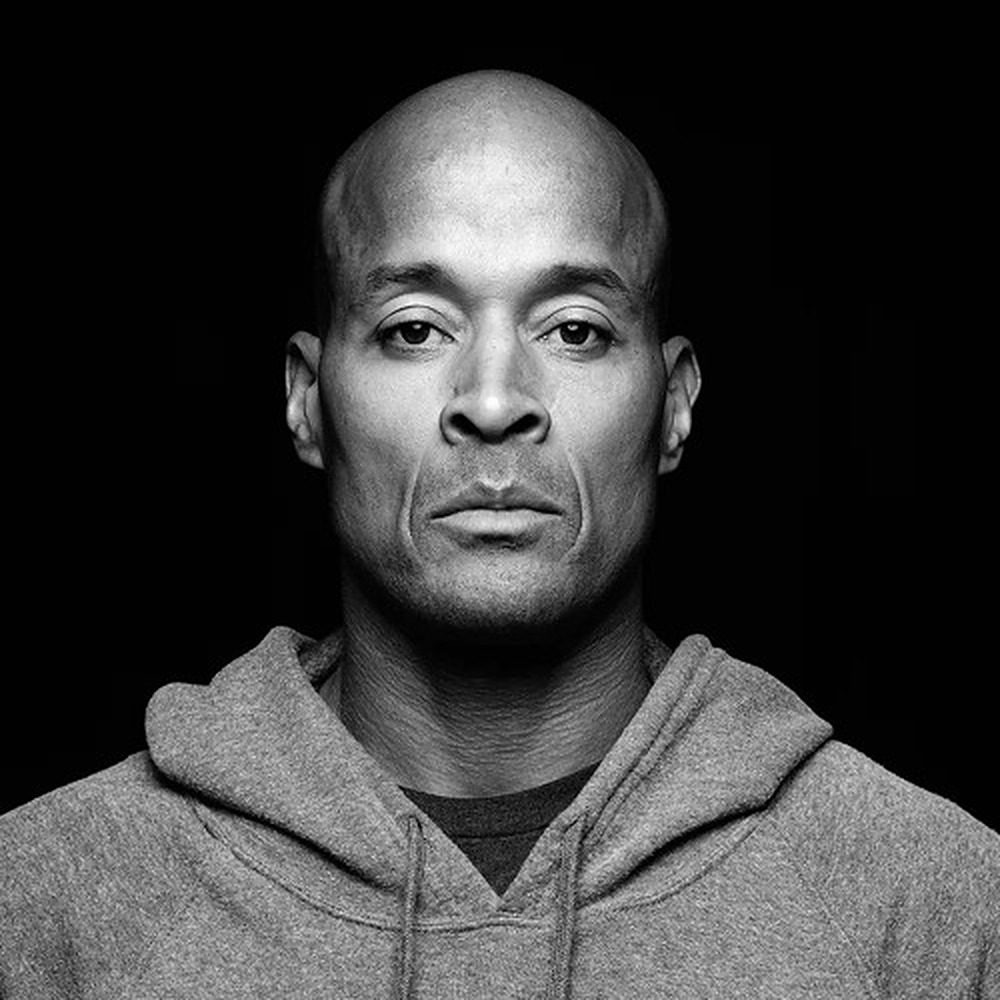
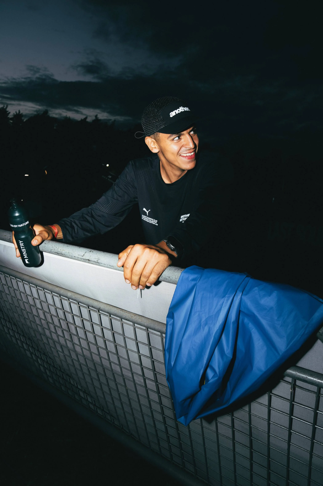
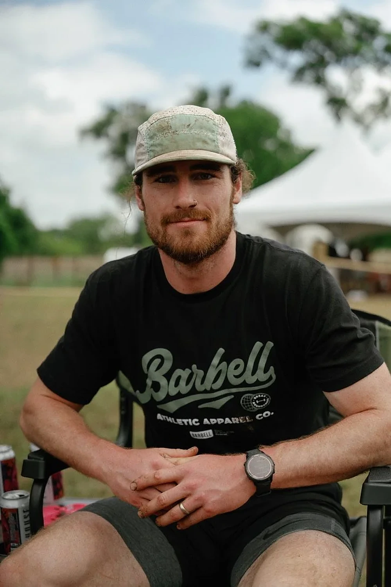
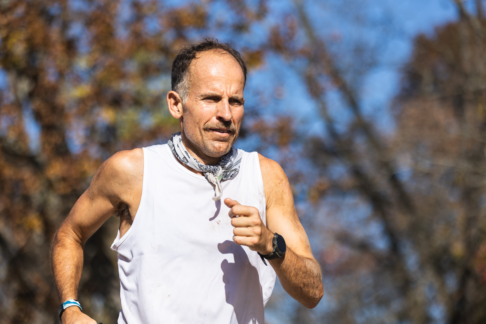
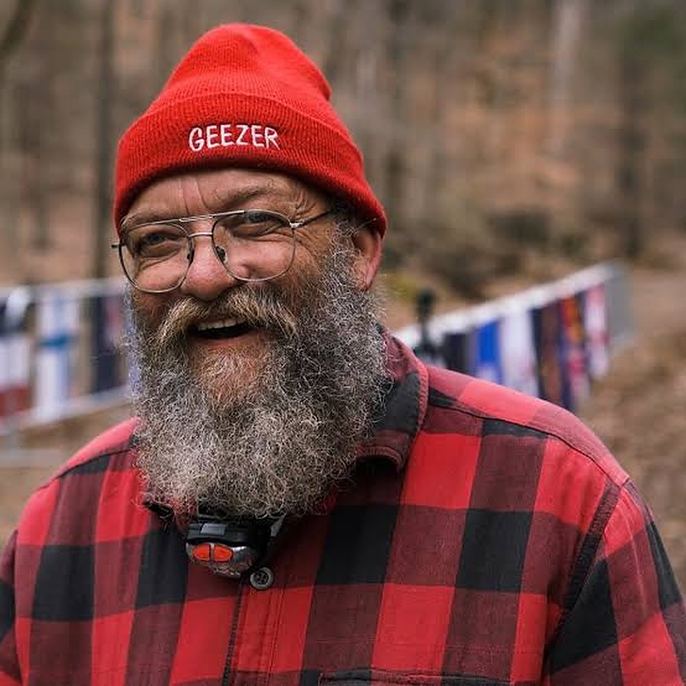

ARDA SAATÇI
Lerne die Läufer kennen, die neu definieren, wozu menschliche Ausdauer fähig ist.
Hinter jedem großartigen Ultramarathon stehen Athleten mit außergewöhnlichem Engagement und Talent. Diese Läufer haben ihr Leben dem Ausloten der Grenzen menschlicher Ausdauer gewidmet. Sie sind nicht nur schnell – sie sind mental stark, widerstandsfähig und besessen davon, ihre Grenzen auszutesten. Hier sind fünf Athleten, die das Ultra Running geprägt haben und die nächste Generation weiterhin inspirieren.

ARDA SAATÇI

KIM GOTTWALD

DAVID GOGGINS

ANOTHER ELLO

MARK DOWDLE

COURTNEY DAUWALTER

HARVEY LEWIS

KRISTIAN MORGAN

LAZARUS LAKE
Land: Türkei (wohnhaft in Deutschland)
Fach: Extreme Ultramarathons
Quelle: bild.de (Artikel vom 11.06.2025), watson.ch, youtube.com (Film „Lost against time“)
Land: Deutschland
Fach: Backyard-Ultra, Veranstalter
Quelle: lastsoulultra.com (Ergebnisse 2025), plunge.com
Land: Deutschland
Fach: Backyard-Ultra
Quelle: lastsoulultra.com (Ergebnisse 2025 und 2026), watson.ch
Land: USA
Fach: Backyard-Ultra
Quelle: lastsoulultra.com (Ergebnisse 2026), watson.ch
Land: USA
Fach: Extreme Ultramarathons
Quelle: badwater.com
Land: USA
Fach: Trail- und Berg-Ultra
Quelle: wikipedia.org
Land: USA
Fach: Backyard-Ultra und Badwater
Quelle: backyardultra.uk, wikipedia.org
Land: Grossbritannien
Fach: Trail und FKT
Quelle: zachbitter.com
Land: USA
Fach: Erfinder und Rennleiter
Quelle: backyardultra.uk
Ultra Running kennt kein Alter – einige der besten Finisher sind in ihren 50ern und 60ern.
Die Preisgelder im Ultra Running steigen.
Die Erfindung des Backyard Ultra durch Lazarus Lake hat weltweit über 50 Ableger-Rennen inspiriert.
Viele Elite-Ultraläufer waren in ihrer Karriere keine Elite-Straßen- oder Bahnläufer.
Mehrere Elite-Ultraläufer sind zugleich professionelle Bergsteiger.
Ultraläufer wechseln häufig aus anderen Ausdauersportarten (Skifahren, Bergsteigen, Radsport).